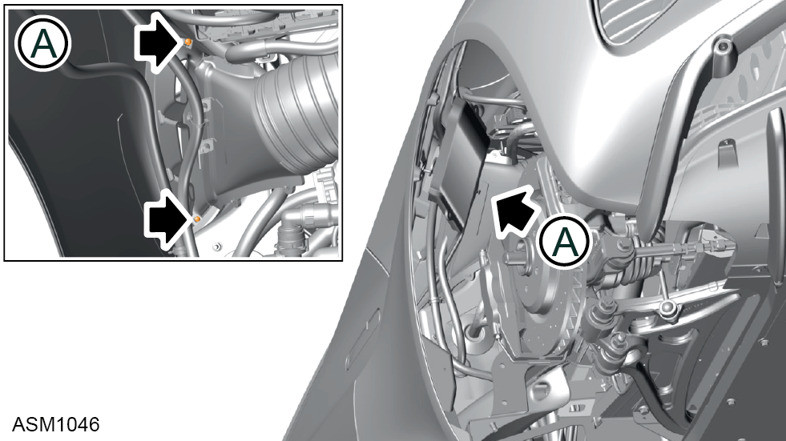

Air Duct - Left Side
Print
Operation Code: 12.03.37-02
Removal
- Remove rear wheelarch liner left side. Refer to procedure.

- Remove M4x8 self tapping screws (x2) securing air duct to rear fender.
- Disengage retaining clips (x4) securing air duct to rear fender.
- Remove air duct from rear fender.
Installation
- Installation is the reverse of removal procedure.